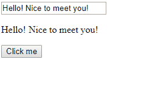

何为双向数据绑定？在MVVM模型中，用户在View层修改了某个对象属性的值，在Model层中该对象属性会自动更新为新的值，反之亦然。举个例子，如果页面上有一个表单字段用于输入用户的name属性，user对象中的name属性也会自动更新；反之，如果修改了user对象中的name属性，这个值会直接影响绑定到这个属性上的UI的值。
上面是一个实现的效果，几种实现双向数据绑定的方式：
1. 发布-订阅者模式（观察者模式）
2. 脏值检查
3. 数据劫持
这篇文章主要介绍一种通过观察者模式和修改对象访问器属性getter/setter实现的双向数据绑定方法。下面先简单介绍一下观察者模式。
也被称作观察者模式，订阅者订阅某个事件，当该事件触发的时候，发布者通过发布该事件来通知所有订阅者。观察者模式是我们经常有用到的一个模式，最常见的就是给元素绑定事件，例如鼠标的点击事件，图片的load事件，这些都运用到了观察者模式的思想。双向数据绑定中的观察者实现代码：
function Observer() {
list = {};//缓存订阅者的数组
return {
listen(key, fn) {//订阅者fn订阅了key事件
if(!list[key]) {
list[key] =[];
}
list[key].push(fn);
},
trigger(...args) {//发布者发布key事件
let key = args.shift();
let fns = list[key];
if(!fns || fns.length ===0) {
return false
}
for(let i = 0, fn; fn = fns[i++]; ) {
fn.apply(this, args);
}
}
}
}
通过修改对象属性的getter/setter可以在属性值发生变化的时候向订阅者发布一个update的事件，下面是对象访问器属性实现代码：
function Text(id) {
var self = this;
this.id = id;
this.binder = new Observer();
//订阅事件
this.binder.listen(self.id, function(value) {
display.innerHTML = value;//更新p标签中的value
nameInput.value = value;//更新输入表单中的value
})
this._name = 'Hello! Nice to meet you!';
}
let text = new Text('input');
Object.defineProperty(text, 'name', {
//给name属性设置getter和setter，使用了ES6语法
get() {
return this._name;
},
set(name) {
var _self = this;
this._name = name;
//发布事件
this.binder.trigger(_self.id, name);
}
});
function handler(event) {
let val = event.target.value;
text.name = val;
}
nameInput.addEventListener('keyup', handler ,false);
nameInput.addEventListener('change', handler, false);
nameInput.value = text.name;
display.innerHTML = text.name;
btn.addEventListener('click', function() {
text.name = 'Hello Wolrd';
}, false);
本文介绍了一个简单的实现双向数据绑定的方法，在实现过程中我们用到了观察者模式，同时复习了一下Object.defineProperty()这个方法。虽然看起来比较low，但是其中的思想还是值得一学的。